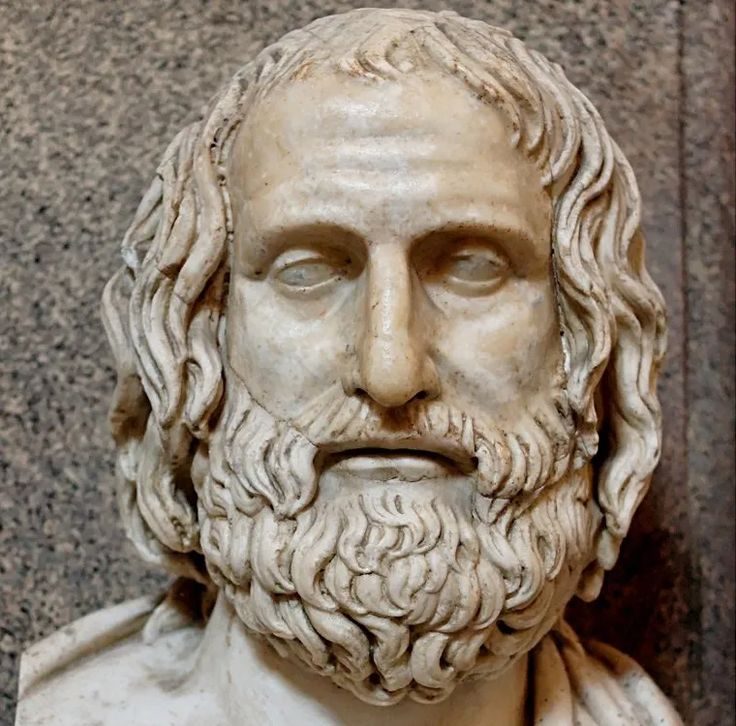

A detailed look at the philosophical schools of the Greek and Roman
world — how each one answered the question of how to live, and why
their answers still matter.
Stoicism
Stoicism teaches that virtue and inner tranquility come from focusing
only on what lies within our control.
Stoicism is a school of ancient Greek and Roman philosophy holding that
virtue — living in agreement with reason and nature — is the only true
good, and that a tranquil, well-lived life comes from learning to
distinguish between what lies within our control (our own judgments,
choices, and reactions) and what does not (external events, other
people's actions, the outcomes of our efforts). The school was founded
around 300 BCE in Athens by Zeno of Citium, who taught in the Stoa
Poikile, or "Painted Porch," a public colonnade that gave the philosophy
its name.Stoicism is not just a set of beliefs or ethical claims,
however, but rather a way of life, involving constant practice and
training, and incorporating the practice of logic, Socratic dialogue and
self-dialogue, contemplation of death, and a kind of meditation aimed at
training one's attention to remain in the present moment.
Zeno's original teachings were developed and systematized over the
following centuries, first by his successors Cleanthes and Chrysippus in
Greece, and later, most influentially, by three Roman Stoics whose
writings largely survive intact: Seneca, a statesman and playwright who
wrote practical letters on ethics and mortality; Epictetus, a former
slave whose teachings, recorded by a student, emphasized rigorous
self-discipline and freedom of the will; and Marcus Aurelius, the Roman
emperor whose private journal,
Meditations, remains one of the most widely read works of
practical philosophy today. Together, these later Roman Stoics shifted
Stoicism's emphasis from the highly technical logic and physics of its
Greek founders toward practical ethics — how to actually live well amid
hardship, loss, and the unpredictability of public life.
Key Principles
The Dichotomy of Control — distinguishing sharply
between what is "up to us" (our judgments and choices) and what is not
(external events), and directing all effort toward the former
Living According to Nature — aligning one's actions
with reason and one's role within the larger rational order of the
cosmos
The Four Cardinal Virtues — wisdom, courage, justice,
and temperance as the sole components of a genuinely good life
Apatheia — freedom from being controlled by
destructive passions, not the absence of all feeling, but freedom from
being ruled by it
Major Works
Meditations — Marcus Aurelius
Letters from a Stoic — Seneca
Discourses and the Enchiridion — Epictetus
Influence
Stoic ethics shaped early Christian thought, particularly its emphasis
on inner virtue over external circumstance, and directly influenced
later philosophers including Spinoza and Kant. In the 20th century,
Stoic principles became foundational to Cognitive Behavioral Therapy
(CBT), whose focus on separating events from our judgments about them
draws directly on Epictetus's distinction between what is and isn't
within our control. Stoicism has also seen a significant popular revival
in recent years, particularly in self-improvement and productivity
contexts.
Common Misconception
Stoicism is often confused with simple emotional suppression — being
"stoic" in everyday English usually just means showing no feeling at
all. The actual philosophy argues something more specific: that we
should not be controlled or destabilized by passions rooted in false
judgments about what truly matters, not that emotion itself is bad. A
Stoic can grieve, love, and feel joy; what Stoicism counsels against is
being enslaved by reactions to things genuinely outside our control.
Epicureanism
Epicurus taught that a tranquil life free from unnecessary fear and
desire is the highest human good.
Epicureanism is a school of ancient Greek philosophy holding that the
highest good is ataraxia — a state of tranquil freedom from
disturbance, fear, and unnecessary desire — achieved not through
indulgence, as popular usage of the word "epicurean" might suggest, but
through modest living, deep friendship, and a clear philosophical
understanding of nature that removes irrational fears, particularly the
fear of death and of the gods. The school was founded around 307 BCE in
Athens by Epicurus, who taught in a private garden that gave his
followers the informal name "the Garden School," notably unusual for
admitting women and enslaved people as full members at a time when this
was rare.Epicurus directed that this state of tranquillity could be
obtained through knowledge of the workings of the world and the limiting
of desires. Thus, pleasure was to be obtained by knowledge, friendship
and living a virtuous and temperate life. He lauded the enjoyment of
"simple pleasures", by which he meant abstaining from bodily desires,
such as sex and appetites, verging on Asceticism. He counseled that "a
cheerful poverty is an honorable state".
Epicurus grounded his ethics in the atomist physics of Democritus,
arguing that the universe consists entirely of atoms moving through
void, with no divine intervention in human affairs — a view he believed,
if properly understood, should dissolve the fear of divine punishment
and the terror of death, since death, on this materialist view, is
simply the dispersal of the atoms that compose a person, and therefore
literally nothing to be experienced or feared. His work survives today
mostly in fragments and in the summary offered by the Roman poet
Lucretius in his lengthy poem On the Nature of Things, which
remains the fullest surviving account of Epicurean philosophy.
Key Principles
Ataraxia — tranquil freedom from mental disturbance
as the highest good
The Fourfold Remedy — don't fear god, don't worry
about death, what is good is easy to get, what is terrible is easy to
endure
Friendship — regarded by Epicurus as one of the
greatest contributors to a happy life
Materialist Physics — a universe of atoms and void,
without divine intervention in human affairs
Major Works
Letter to Menoeceus — Epicurus
On the Nature of Things — Lucretius
Influence
Epicurean atomism anticipated key elements of later scientific
materialism, and its ethical emphasis on removing irrational fear
influenced later secular and humanist thought. The philosophy saw a
significant revival during the Enlightenment, when thinkers drawn to its
naturalistic, non-superstitious worldview reintroduced Epicurean ideas
into modern philosophy.
Common Misconception
"Epicurean" has come to mean someone devoted to fine food and luxury,
almost the opposite of Epicurus's actual teaching. Epicurus specifically
warned against extravagant pleasure, arguing that excessive desire
creates more suffering than satisfaction, and recommended simple meals
and modest living as the surer path to a tranquil, pleasurable life.
Cynicism
Diogenes of Sinope lived by begging and slept in a large ceramic jar,
treating a life stripped of possessions as a form of freedom.
Cynicism is a school of ancient Greek philosophy that held that living
virtuously means living in accordance with nature, radically stripped of
social convention, material possessions, and the desire for wealth,
power, or reputation. The name likely derives from the Greek word
kynikos, "dog-like," possibly a mocking reference to the
shameless, unconventional public behavior of its practitioners, who
treated the label as a badge of honor rather than an insult. The school
is traditionally traced to Antisthenes, a student of Socrates, though it
is far more closely associated with his student's student, Diogenes of
Sinope.The Cynics believed that the world belongs equally to everyone,
and that suffering is caused by false judgments of what is valuable, and
by the worthless customs and conventions which surround society. They
also saw their job as acting as the watchdog of humanity, and to
evangelize and hound people about the error of their ways. They were
particularly critical of any show of greed, which they viewed as a major
cause of suffering. Many of their ideas were later absorbed into
Stoicism.
Diogenes (c. 412–323 BCE) took Cynic principles to their most extreme
and theatrical conclusion, reportedly living in a large ceramic storage
jar in Athens, begging for his food, and openly mocking social
conventions around modesty, wealth, and status through deliberately
shocking public behavior. According to tradition, when Alexander the
Great visited him and offered to grant any request, Diogenes reportedly
asked only that Alexander step aside, as he was blocking the sunlight —
a story usually told to illustrate Diogenes's genuine indifference to
power and status, regardless of its precise historical accuracy.
Key Principles
Living According to Nature — rejecting artificial
social convention in favor of natural, unadorned living
Asceticism — voluntary poverty and the rejection of
material possessions as a path to freedom
Parrhesia — frank, fearless speech, regardless of
social consequence
Cosmopolitanism — Diogenes's claim to be a "citizen
of the world" rather than of any single city-state
Major Works
No original Cynic writings survive intact; what we know comes primarily
through later biographical accounts, particularly Diogenes Laërtius's
Lives of Eminent Philosophers, and through anecdotes preserved
by other ancient authors.
Influence
Cynicism directly shaped Stoicism — Zeno of Citium, Stoicism's founder,
studied under a Cynic teacher before founding his own school, and Stoic
ethics retained much of Cynicism's emphasis on virtue over external
circumstance, minus its more extreme rejection of social convention.
Cynic ideals of self-sufficiency and indifference to material wealth
also echo forward into later ascetic and minimalist philosophical
traditions.
Common Misconception
Modern "cynicism" — a generalized distrust of others' motives and
sincerity — shares only its name with the ancient philosophy. Ancient
Cynics were not distrustful of people in general; they were committed to
a demanding positive ideal of virtuous, natural living, expressed
through radical simplicity rather than through suspicion or contempt for
others.
Skepticism
Pyrrho argued that suspending judgment about matters of uncertain
truth was the surer path to peace of mind.
Ancient Skepticism is a school of philosophy holding that certain
knowledge about most matters is unattainable, and that the wisest
response is epoché — suspension of judgment — rather than
committing to confident claims that cannot actually be justified. Rather
than a single unified doctrine, ancient Skepticism developed across two
related traditions: Pyrrhonism, founded by Pyrrho of Elis (c. 360–270
BCE), and Academic Skepticism, which took hold within Plato's own
Academy several generations after his death, turning the originally
dogmatic school toward systematic doubt instead. Global Skepticism (or
Absolute Skepticism or Universal Skepticism) argues that one does not
absolutely know anything to be either true or false. Academic Global
Skepticism, therefore, seems to require that absolutely nothing can be
known, except for the knowledge that nothing can be known. Others try to
maintain some philosophical rigor by claiming to be merely reasonably
certain that Skepticism is true, while never asserting that Skepticism
itself can be known to be true with absolute certainty. Local Skepticism
denies that people do (or can) have knowledge of a particular area or
subject (e.g. religion, ethics, morality).
Pyrrho, who reportedly traveled with Alexander the Great's expedition to
India and may have encountered Indian ascetic traditions there, argued
that things are fundamentally unknowable in their true nature, and that
the resulting inability to determine truth should lead not to anxiety
but to ataraxia
— the same tranquil peace of mind sought by the Epicureans, but reached
here through the deliberate suspension of judgment rather than through
physical understanding of nature. His teachings survive mainly through
his student Timon of Phlius and, centuries later, through the far more
systematic writings of Sextus Empiricus, whose work remains the fullest
surviving source for ancient Skeptical arguments and methods.
Key Principles
Epoché — suspension of judgment on matters where
certainty cannot be reached
Ataraxia — the tranquility that follows from no
longer straining after unattainable certainty
The Ten Modes — a set of stock arguments, attributed
to Aenesidemus, demonstrating why sense perception fails to yield
certain knowledge
Equipollence — the practice of setting opposing
arguments against each other with equal force, to demonstrate that
neither side can be conclusively established
Major Works
Outlines of Pyrrhonism — Sextus Empiricus
Influence
Ancient Skepticism directly shaped early modern philosophy, most
significantly through its rediscovery during the Renaissance, when it
influenced Descartes's method of systematic doubt — even though
Descartes ultimately sought to escape skepticism rather than rest within
it. Skeptical arguments about the limits of sensory knowledge remain a
live reference point in contemporary epistemology.
Common Misconception
Ancient Skepticism is often confused with simple cynicism about
everything, or with the modern scientific sense of "skeptic" as someone
who demands evidence before believing a specific claim. Ancient Skeptics
went considerably further, questioning whether certain knowledge is
achievable at all — and treated that very uncertainty, rather than
aggressive doubt itself, as the source of peace of mind.
Peripateticism
Aristotle's Lyceum, named for its covered walkway, emphasized careful
observation and systematic empirical inquiry.
Peripateticism refers to the philosophical school founded by Aristotle
at the Lyceum in Athens in 335 BCE, its name derived from the Greek
peripatetikos, "of walking," traditionally said to describe
Aristotle's habit of walking while lecturing along the Lyceum's covered
walkway (peripatos), though some historians suggest the name may simply
reference the walkway itself rather than any specific teaching habit.
Unlike the more narrowly ethical focus of Stoicism, Epicureanism, or
Cynicism, Peripatetic philosophy was comprehensive in scope, covering
logic, biology, physics, ethics, politics, and metaphysics through
systematic empirical observation.
Aristotle led the school until his death in 322 BCE, after which
leadership passed to Theophrastus, who continued and expanded
Aristotle's empirical projects, particularly in botany, earning him
recognition as a founding figure in the systematic study of plants. The
Lyceum maintained an extensive library and collection of specimens,
functioning as something close to a research institution in the modern
sense — a place not merely for philosophical discussion but for the
active, ongoing collection and classification of empirical knowledge
about the natural world.
Key Principles
Empirical Observation — grounding philosophical
claims in careful study of the natural world
The Golden Mean — virtue as a balance between excess
and deficiency
Teleology — the view that natural things have
inherent purposes or ends they develop toward
Formal Logic — the syllogism as a systematic tool for
valid reasoning
Major Works
Nicomachean Ethics — Aristotle
Physics and Metaphysics — Aristotle
Enquiry into Plants — Theophrastus
Influence
Peripatetic philosophy, chiefly through Aristotle's own works, became
the single most influential philosophical system in both the Islamic
Golden Age and medieval European Scholasticism, shaping thinkers from
Avicenna and Averroes to Thomas Aquinas. Its empirical method is also
often cited as a direct ancestor of the modern scientific method.
Common Misconception
Peripateticism is sometimes treated as simply a synonym for
"Aristotelianism" in general, but strictly refers to the specific
institutional school Aristotle founded and its immediate successors — a
narrower designation than the much broader, centuries-long influence of
Aristotelian philosophy as a whole.
Neoplatonism
Plotinus taught that all of reality emanates from a single,
transcendent source he called "the One."
Neoplatonism is a school of philosophy, flourishing from the 3rd century
CE onward, that develops and substantially reworks Plato's philosophy
into a systematic account of reality as a hierarchy emanating from a
single, ultimate, and fundamentally indescribable source. It was founded
by Plotinus (c. 204–270 CE), who studied in Alexandria before teaching
in Rome, and whose collected writings, compiled by his student Porphyry
into a work called the
Enneads, remain the foundational text of the tradition.
Plotinus described reality as flowing outward, or "emanating," from a
single transcendent source he called the One — a
reality beyond being itself, beyond even the categories of thought and
language, from which successive levels of reality proceed: first
Intellect (nous), then Soul, then the material world we perceive. The
philosophical and spiritual task of a human life, in this framework, is
to reverse that outward flow — turning the soul back through
contemplation toward reunion with the One from which it originally
emerged. Porphyry, alongside preserving Plotinus's work, also wrote his
own influential commentaries and an introduction to Aristotelian logic
that would remain a standard educational text for centuries.
Key Principles
The One — a single, transcendent source beyond being
and description, from which all reality emanates
Emanation — reality flowing outward in successive
levels from the One, through Intellect and Soul, to the material world
The Soul's Return — the philosophical task of turning
back toward reunion with the One through contemplation
The Hierarchy of Being — reality structured in graded
levels, from the purely spiritual to the purely material
Major Works
Enneads — Plotinus (compiled by Porphyry)
Influence
Neoplatonism profoundly shaped early Christian theology, particularly
through Augustine of Hippo, who drew heavily on Neoplatonic ideas of
emanation and spiritual ascent in constructing Christian metaphysics. It
similarly influenced Islamic philosophy through Al-Farabi, and saw a
major revival during the Renaissance through Marsilio Ficino's
translations and Florentine Neoplatonism.
Common Misconception
Neoplatonism is sometimes treated as simply an extension or restatement
of Plato's own philosophy, but it represents a substantial and original
systematic development beyond anything Plato himself wrote —
particularly its doctrine of the One as beyond being, which has no
direct equivalent in Plato's own dialogues.
Atomism
Democritus and Leucippus proposed that all of reality is built from
indivisible particles moving through empty space.
Atomism is a school of ancient Greek natural philosophy holding that all
of physical reality consists of indivisible, indestructible particles
called atoms (from the Greek atomos, "uncuttable") moving
through empty void, with all observable phenomena explained by their
motion, combination, and arrangement rather than by divine will or
purpose. The school is credited to Leucippus, about whom almost nothing
certain is known, and his student Democritus (c. 460–370 BCE), whose
extensive writings survive only in fragments quoted by later authors.
The Hindu Nyaya-Vaisesika school developed one of the earliest forms of
Atomism in India between the 6th century B.C. and 1st Century B.C., with
elaborate theories of how the four elemental atom types (with 24
different possible qualities), combine. These atoms were considered to
have general (intensive and extensive) properties and specific
(intensive) properties, and to combine in pairs (dyads), and then group
into trios of pairs (triads), which are the smallest visible units of
matter.
Democritus argued that atoms differ from one another only in shape,
size, and arrangement, not in any inherent qualities like color or taste
— those sensory qualities, he held, exist only in the perceiving mind,
arising from how different atomic arrangements interact with our senses,
not as properties genuinely present in the atoms themselves. This
position made Democritus one of history's earliest systematic
materialists, and his ideas were later taken up and extended by
Epicurus, who adopted atomism as the physical foundation for his own
ethical philosophy, and by the Roman poet Lucretius, whose
On the Nature of Things remains the most complete surviving
ancient account of atomist physics.
Key Principles
Atoms & Void — reality consists of indivisible
particles moving through empty space
Materialism — all phenomena explained by physical
causes, without appeal to divine will
Secondary Qualities — sensory properties like color
and taste exist in perception, not in atoms themselves
Mechanistic Causation — events explained by the
motion and collision of atoms, not by purpose or design
Major Works
Democritus's original writings survive only in fragments quoted by later
authors; the fullest surviving systematic account of ancient atomism is
On the Nature of Things by the Roman poet Lucretius, writing
centuries later from an Epicurean perspective.
Influence
Atomism directly shaped Epicurean physics and, through it, later
Enlightenment materialism. Its core intuition — that complex phenomena
can be explained by the arrangement of simple, uniform underlying
particles — anticipated, in remarkably general outline, the atomic
theory later developed and experimentally confirmed by modern chemistry
and physics, though ancient atomism was a philosophical position rather
than an empirically tested scientific theory.
Common Misconception
Ancient atomism is sometimes described as though it directly anticipated
modern atomic physics in its specifics, but the ancient theory was a
philosophical argument about the fundamental nature of matter, not an
experimentally derived scientific model — the "atoms" of Democritus and
modern physics share a name and a general intuition, but very little
else in actual structure or content.
Sophism

Protagoras taught that truth and morality might be relative to each
individual, encapsulated in his claim that "man is the measure of all
things."
Sophism refers to a movement of traveling teachers in 5th-century BCE
Greece who taught rhetoric, argumentation, and practical skills for
public and political life, typically for a fee, to ambitious young
citizens seeking success in the highly competitive civic life of
Athenian democracy. Rather than a unified philosophical school with
shared doctrines, the Sophists were a loosely connected professional
class, united more by their teaching methods and willingness to charge
for education than by any single shared philosophical position.
Sophists had considerable influence in their time, and were largely
well-regarded. They were generally itinerant teachers who accepted fees
in return for instruction in oratory and rhetoric, and they emphasized
the practical application of rhetoric toward civic and political life.
Their cultural and psychological contributions played an important role
in the growth of democracy in Athens, not least through their rhetorical
teaching, their adoption of Relativism and their liberal and pluralistic
acceptance of other viewpoints. Sophists were also some of the world's
first lawyers, making full use of their highly-developed argumentation
skill.
Protagoras (c. 490–420 BCE), among the most famous Sophists, is best
remembered for his claim that "man is the measure of all things" — often
interpreted as a form of relativism, the view that truth and morality
may differ from person to person or culture to culture, rather than
existing as fixed, universal facts. This relativistic strand, along with
the Sophists' reputation for teaching persuasive argument regardless of
the underlying truth of a position, drew sharp criticism from Socrates
and Plato, whose dialogues frequently depict Sophists as more interested
in winning arguments than in discovering truth — a characterization
scholars now regard as somewhat unfair, shaped significantly by Plato's
own philosophical rivalry with the movement.
Key Principles
Rhetoric — the systematic study and teaching of
persuasive argument and public speaking
Relativism — the view, associated with Protagoras,
that truth may be relative to the individual or culture
Practical Education — teaching skills directly useful
for political and civic success, for a fee
Arguing Both Sides — the practice of constructing
persuasive arguments for opposing positions, as an intellectual and
rhetorical exercise
Major Works
Almost no original Sophist writings survive intact; what remains comes
mostly through fragments and through Plato's own dialogues, which are
the primary — though philosophically hostile — source for most of what
is known about Sophist teaching.
Influence
Despite Plato's critical portrayal, Sophist attention to rhetoric,
argumentation, and the persuasive use of language laid important
groundwork for the later formal study of logic and rhetoric, including
Aristotle's own systematic treatment of both subjects. Sophist
relativism also anticipated debates about the universality of moral and
epistemic truth that remain active in philosophy today.
Common Misconception
"Sophistry" has become a term for deliberately deceptive or manipulative
argument — reasoning that sounds persuasive but is actually fallacious.
While some Sophists likely did prioritize winning arguments over truth,
treating the entire movement as synonymous with intellectual dishonesty
oversimplifies a genuinely diverse group of teachers, some of whom made
serious and lasting contributions to logic, rhetoric, and political
theory.
Explore Philosophy Beyond Greece
While Greek philosophy developed through schools such as Platonism,
Aristotelianism, Stoicism, and Epicureanism, other civilizations
developed their own rich philosophical traditions. Explore the
philosophical schools of ancient India and discover their distinctive
approaches to reality, knowledge, ethics, and liberation.